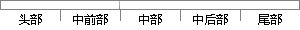

成功后则清除本地缓存的tokrn，弹出登录即界面；
片段位置图

相似结果|
相似片段 1：个人信息界面并显示修改后的信息租房用户点击注销 退出登录，跳转到登录界面在缓存中清除登录信息，页面跳转到登录界面租房用户点击意见反馈进入意见反馈界面，填写反馈意见并提交，弹出反馈成功提示填写反馈意见提交后
相似片段 2：、4.14 所示。个人中心设置主界面个人信息管理语言设置 清理缓存账户注销进入个人账户界面弹出语言选择对话框选择某一个语言整个APP的提示文本切换到对应语言上查看数据库和文件是否有数据提示清除缓存成功是否确认
|
※ 片段修改建议 ※
近似词参考：- 成功：乐成 胜利
- 清除：断根 排除 肃清 消灭 扫除
- 本地：当地
系统自动生成语句：乐成后则断根当地缓存的tokrn，弹出登录即界面；
注：本片段修改建议为系统自动生成，仅供参考。